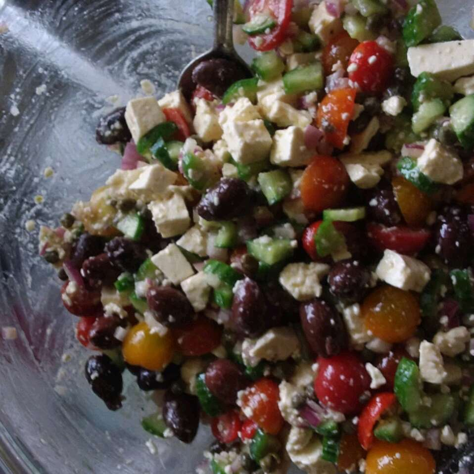

Oia Greek Stalad Recipe

Description
An authentic Greek salad from Oia, Santorini in Greece.
Traveling through Greece, I feel in love with the Greek salads on the islands because they had no lettuce.
When I came home, I was determined to replicate that salad for family and friends.
This is a great green salad recipe because extra salad can marinate in the dressing overnight and be eaten the next day in pita pockets as a sandwich.
Ingredients:
- 1 English cucumber, diced
- 2 pints grape tomatoes, halved
- 1 (4 ounce) container crumbled feta cheese
- 1 (4 ounce) jar capers, drained
- ½ cup diced red onion
- ¼ cup Greek salad dressing, such as Yazzo!
- ½ cup Greek olives, drained
Steps
- Keep all of the ingredients separate until ready to serve so the onion doesn't overpower everything. To prepare the salad, toss the cucumber, tomatoes, feta cheese, capers, onion, and salad dressing together in a large bowl until evenly coated. Sprinkle with the Greek olives to serve.